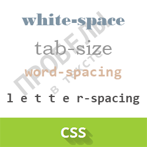
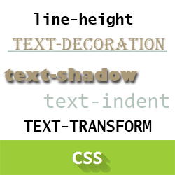

Синтаксис CSS состоит из правил, каждое из которых описывает,
как должны отображаться элементы страницы. Правило включает в себя
селектор, указывающий, к каким элементам применяется правило, и блок
объявлений, содержащий сами правила оформления.
 Блок объявлений заключается в фигурные скобки и содержит одно или
несколько объявлений, разделенных точкой с запятой. Каждое объявление
состоит из свойства и значения, разделенных двоеточием. Свойство
определяет характеристуку оформления (цвет, шрифт, отступ и т. д.),
а значение указывает конкретное значение этого свойства.
Блок объявлений заключается в фигурные скобки и содержит одно или
несколько объявлений, разделенных точкой с запятой. Каждое объявление
состоит из свойства и значения, разделенных двоеточием. Свойство
определяет характеристуку оформления (цвет, шрифт, отступ и т. д.),
а значение указывает конкретное значение этого свойства.

Например, правило p { color: blue; font-size: 12px; } применяет
синий цвет и размер шрифта 12 пикселей ко всем элементам параграфа.
В CSS также поддерживаются комментарии, которые заключаются в
скобки с косой чертой: /* это комментарий */. Комментарии могут
использоваться для пояснения кода и не отображаются в браузере.

Селекторы позволяют выбирать элементы по тегу, классу или
идентификатору. Селектор по тегу применяется ко всем элементам
данного типа, по классу — к элементам с соответствующим атрибутом
class, а по идентификатору — к элементу с атрибутом id.
Комбинируя различные селекторы, можно точно указать, к каким
элементам страницы применяются стили.
